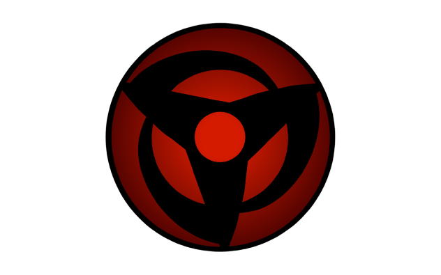

<ion-app>
  <ion-menu menuId="main-menu" content-id="main">

    <ion-header>
      <ion-toolbar color="dark">
        <ion-row>
          <ion-col>
            <ion-title class="bigfont">ARCADE</ion-title>
          </ion-col>
        </ion-row>
        <ion-row>
          <ion-col class="smallfont">
            
            {{(UserObservado$|async).nombre}}
          </ion-col>
        </ion-row>
      </ion-toolbar>
    </ion-header>

    <ion-content>

      <ion-list>
        <ion-menu-toggle *ngIf="logeado" >
          <ion-item color="dark" routerLink="/home">
            <ion-icon name="home-outline"></ion-icon>
            <ion-label class="smallfont">&nbsp;Home</ion-label>
          </ion-item>
        </ion-menu-toggle>
        <ion-menu-toggle *ngIf="!logeado">
          <ion-item color="dark" routerLink="/login">
            <ion-icon name="person-circle-outline"></ion-icon>
            <ion-label class="smallfont">&nbsp;Login</ion-label>
          </ion-item>
        </ion-menu-toggle>
        <ion-menu-toggle *ngIf="logeado" >
          <ion-item color="dark" routerLink="/juegos">
            <ion-icon name="beer-outline"></ion-icon>
            <ion-label class="smallfont">&nbsp;Ver Juegos</ion-label>
          </ion-item>
        </ion-menu-toggle>
        <ion-menu-toggle *ngIf="logeado">
          <ion-item color="dark" routerLink="/favoritos">
            <ion-icon name="heart-outline"></ion-icon>
            <ion-label class="smallfont">&nbsp;Favoritos</ion-label>
          </ion-item>
        </ion-menu-toggle>
        <div >{{user.perfil}}
        <ion-menu-toggle *ngIf="logeado && admin">
          <ion-item color="dark" routerLink="/pagAdministrador">
            <ion-icon name="alert-circle-outline"></ion-icon>
            <ion-label class="smallfont">&nbsp;Administrador</ion-label>
          </ion-item>
        </ion-menu-toggle>
      </div>
        <ion-menu-toggle  *ngIf="logeado">
          <ion-item color="dark" routerLink="/perfil">
            <ion-icon name="person-outline"></ion-icon>
            <ion-label class="smallfont">&nbsp;Perfil Usuario</ion-label>
          </ion-item>
        </ion-menu-toggle>
        <ion-menu-toggle *ngIf="logeado">
          <ion-item color="dark" (click)="Logout()" routerLink="/login">
            <ion-icon name="exit-outline"></ion-icon>
            <ion-label class="samllfont">&nbsp;Salir</ion-label>
          </ion-item>
        </ion-menu-toggle>
      </ion-list>
    </ion-content>
  </ion-menu>
  <ion-router-outlet id="main"></ion-router-outlet>
</ion-app>
